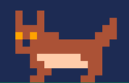

Insert the YARR game cartridge into your Gnarrtari™ 2600 system.
Turn on your television and switch your console to the ON position.
You are the arctic wolf.
You must ensure that your coyote  gets a peaceful sleep.
Catch his sleeping Z's before they reach the top of the screen.
Avoid the enemies that threaten to wake him up, if you touch one you lose a life:
If you lose all your lives, he's gonna wake up and yarr!
A bonus round will occur every 10 Z's. Successful completion will grant you a bonus life!